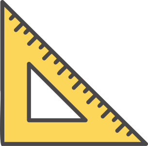
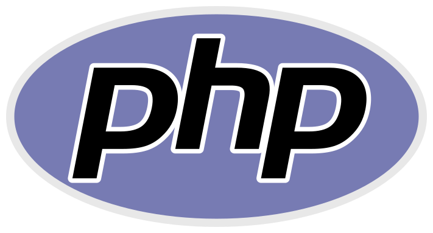
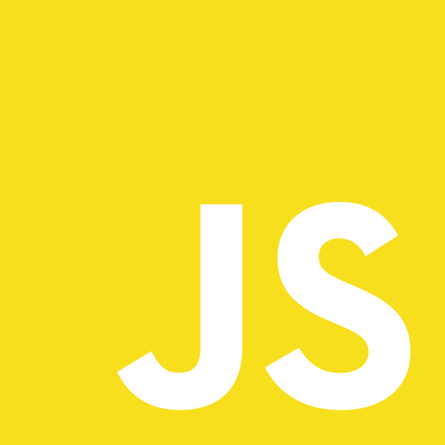
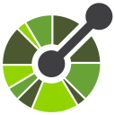
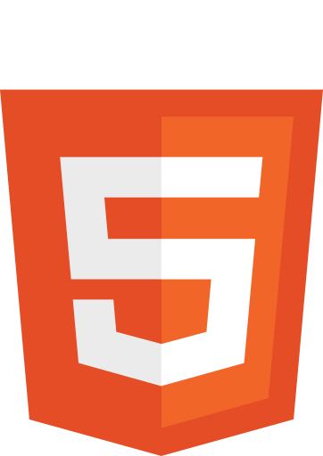
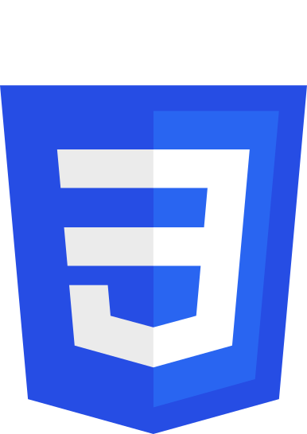
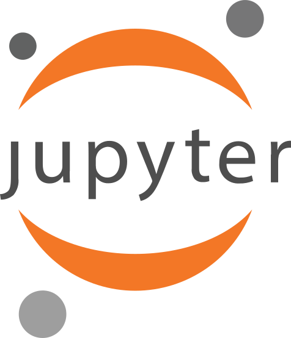

AI & Retrieval Engineering
RAG PipelinesRAG PipelinesBuilt the 5-stage LeoWiki RAG pipeline (dev_dito).
EmbeddingsEmbeddingssentence-transformers, 5-model benchmark (thesis).
VL-EnrichmentVL-EnrichmentQwen-2.5-VL enrichment of images/PDFs (thesis).
Model SelectionModel SelectionBenchmarked BGE/Octen/Arctic/OpenAI (thesis FF3).
Content-Aware ChunkingContent-Aware Chunking512-token chunking, 10,841 chunks (thesis).
 Vector Search
Vector Search
Evaluation & Benchmarking
MRR · nDCG · MAP · P@kMRR · nDCG · MAP · P@kAll four metrics implemented (thesis eval).
LLM-as-JudgeLLM-as-JudgeLLM-as-Judge scorer (dev_dito eval).

RAGASRAGASRAGAS evaluator (dev_dito eval). Wilcoxon + Bootstrap CIsWilcoxon + Bootstrap CIsSignificance tests on all comparisons (thesis). Ground-Truth CurationGround-Truth Curation78 verified QA pairs (thesis). MCP & Agent Systems
MCP & Agent Systems
 Local LLM Operations
Local LLM Operations
LM StudioLM StudioVL-enrichment & Leonidas client.
OllamaOllamaOllama provider (pipeline & Leonidas).
GPU InferenceGPU InferenceEval on RTX 4080 (thesis).
API FallbackAPI FallbackDocumented local→API trade-off (thesis).
 Programming Languages
Programming Languages

PHPPHPDokuWiki plugins (Dev Dito, Leonidas).
JavaScriptJavaScriptdie_glocke & DBI Survival Kit. Backend & APIs
Backend & APIs

REST · OpenAPIREST · OpenAPIproject-connect REST API. Auth & Security
Auth & Security
OAuth 2.1OAuth 2.1OAuth 2.1 on the MCP server (thesis).
JWTJWTJWT role decoding (thesis RBAC).
RBACRBACTwo-tool RBAC (thesis ch. 5).
ScalekitScalekitScalekit OAuth integration (thesis).
Error Masking · Audit LogError Masking · Audit LogError masking + audit middleware (thesis).
 Databases
Databases
Oracle PL/SQLOracle PL/SQL300+ PL/SQL snippets (DBI kit).
PostgreSQLPostgreSQLPostgreSQL snippets & tests (DBI kit).
SQL ServerSQL Serverproject-connect session store.
 JPA / HibernateJPA / HibernateJPA exercise lab (5 exercises).
Vector DBsVector DBsQdrant in production (thesis).
JPA / HibernateJPA / HibernateJPA exercise lab (5 exercises).
Vector DBsVector DBsQdrant in production (thesis).
 Containers & Deployment
Containers & Deployment
 CI & Testing
CI & Testing
 Frontend & UI
Frontend & UI

HTMLHTMLThis site & die_glocke (no framework).
CSSCSSHand-written theme (this site). Wiki & Knowledge Systems
Wiki & Knowledge Systems

JupyterJupyterAnalysis notebooks (dev_dito). Game Dev
Game Dev
Tools & IDEs
CursorCursorDaily driver + own plugin.
 VS CodeVS CodeAuthor of 2 extensions.
VS CodeVS CodeAuthor of 2 extensions.
 Claude CodeClaude CodeOwn plugin (agents + MCP).
Claude CodeClaude CodeOwn plugin (agents + MCP).
 GitGitOwn git-flow automation.
GitGitOwn git-flow automation.
 GitHubGitHub324 repos, Actions, Pages.
GitHubGitHub324 repos, Actions, Pages.
 PostmanPostmanAPI testing (project-connect).
PostmanPostmanAPI testing (project-connect).
 WindowsWindowsPSE Nexus (Windows-native).
WindowsWindowsPSE Nexus (Windows-native).
 Architecture & Method
Architecture & Method
Spec-driven developmentSpec-driven developmentSpec-Kit in dev_dito & Leonidas.
Gap analyses & debt trackingGap analyses & debt trackingG01–G19 gap analysis (PSE Nexus).
Trade-off documentationTrade-off documentationLocal-vs-API decision (thesis FF3).
Benchmark-driven decisionsBenchmark-driven decisionsFive-model benchmark drove the choice.